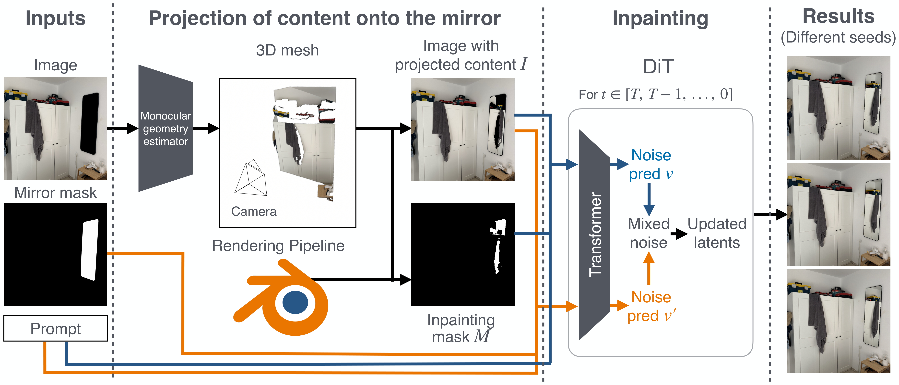
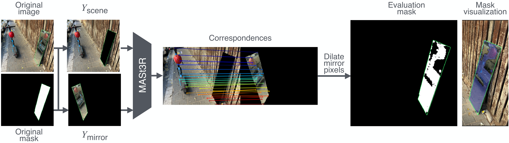

Mirrors are common in real-world images, yet producing geometrically consistent reflections with generative models remains challenging. Unlike most objects, mirror appearance depends on scene geometry and viewpoint, making it hard to synthesize using learned appearance priors alone. We address this in the mirror inpainting setting, where the scene is fixed and only the mirror region is generated.
Our key insight is that much mirror content is geometrically constrained by the visible scene and need not be hallucinated. We estimate scene geometry and project visible content into the mirror to recover reflection regions determined by geometry. A generative model then completes the mirror region via a two-mask diffusion strategy balancing geometric constraints with the model's learned priors, reducing projection artifacts and improving reflection consistency. The method is training-free and applicable to complex real-world scenes.
We evaluate on MirrorBench-V2 (synthetic) and real images. Using standard and geometry-aware metrics, we show that explicitly using scene geometry improves consistency.

A monocular geometry estimator reconstructs a 3D mesh. Visible scene content is reflected across the estimated mirror plane and rendered back onto the mirror region. During diffusion inpainting, two complementary masks drive geometry-constrained and generative noise predictions, which are interpolated at each timestep.
We use a monocular geometry estimator to reconstruct a 3D mesh and camera parameters from the single input image. The mirror plane is estimated by fitting a plane to the masked region. The scene is then reflected across this plane and rendered — recovering every mirror pixel whose content is deterministically constrained by scene geometry.
Projection is imperfect: occlusions and depth errors leave some pixels uncertain. We define two masks — a geometry constraint mask (unprojected pixels) and a generative refinement mask (full mirror) — encoding complementary information for the diffusion model's two parallel noise predictions.
At each denoising step, the two noise predictions are interpolated with a time-varying schedule: early steps rely on the geometry constraint mask (global structure), late steps lean on the generative mask (appearance details). The result is physically consistent and visually realistic — without any retraining.
Each image is divided into four quadrants, one per method (labeled by corner). On desktop, move your mouse over the image to adjust the split.
Metrics reported over all mirror pixels and the geometrically constrained mirror subset, identified using ground-truth geometry.
| Method | Geometry Source | Full Mirror Metrics | Constrained Mirror Pixels | ||||
|---|---|---|---|---|---|---|---|
| PSNR↑ | SSIM↑ | LPIPS↓ | PSNR↑ | SSIM↑ | LPIPS↓ | ||
| Qwen-Image-Edit | ✗ | 9.27 | 0.25 | 0.34 | 10.59 | 0.24 | 0.12 |
| MirrorFusion 2.0 | GT | 9.89 | 0.25 | 0.28 | 10.75 | 0.24 | 0.06 |
| FLUX.1 Fill | ✗ | 13.21 | 0.37 | 0.22 | 14.87 | 0.32 | 0.04 |
| Ours | Est. | 13.81 | 0.38 | 0.22 | 16.35 | 0.37 | 0.03 |
| Ours | GT | 14.42 | 0.44 | 0.19 | 21.92 | 0.59 | 0.02 |
Constrained mirror pixels are identified via our Reflection Consistency Score (RCS), which isolates mirror regions whose appearance is geometrically constrained by visible scene content.
| Method | Full Mirror Metrics | Constrained Mirror Pixels (RCS) | ||||
|---|---|---|---|---|---|---|
| PSNR↑ | SSIM↑ | LPIPS↓ | PSNR↑ | SSIM↑ | LPIPS↓ | |
| MirrorFusion 2.0 | 10.05 | 0.39 | 0.13 | 10.12 | 0.37 | 0.07 |
| Qwen-Image-Edit | 10.44 | 0.36 | 0.13 | 10.16 | 0.34 | 0.07 |
| FLUX.1 Fill | 13.42 | 0.47 | 0.11 | 13.72 | 0.45 | 0.05 |
| Ours (no interpolation) | 13.51 | 0.48 | 0.10 | 14.48 | 0.48 | 0.05 |
| Ours (with interpolation) | 13.62 | 0.48 | 0.10 | 14.64 | 0.49 | 0.05 |
Standard metrics evaluate all mirror pixels equally, but many pixels have no unique correct answer — they reflect parts of the scene not visible from the camera. We propose the Reflection Consistency Score (RCS), an evaluation protocol that isolates only those mirror pixels whose appearance is geometrically constrained by the visible scene, enabling meaningful pixel-level comparison on real images without ground-truth depth.
We decompose the image into a scene view and a horizontally-flipped mirror view, then use MASt3R to estimate dense correspondences between the two. Mirror pixels with valid correspondences are dilated to form the evaluation mask. On synthetic scenes, the estimated mask achieves mean IoU 0.71 against ground-truth constrained masks, with 88% precision and 81% recall.

MASt3R finds correspondences between the scene view and the horizontally-flipped mirror view. Matched pixels are dilated to form the constraint mask used for evaluation.
@inproceedings{fillmymirror2026,
title = {Fill My Mirror: Geometry-Constrained Mirror Inpainting},
author = {Basson, Ofek and Vainer, Shimon and Hel-Or, Yacov and Fried, Ohad},
booktitle = ,
year = {2026},
}